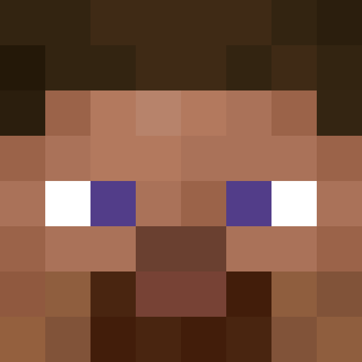

Haberler
CloverLauncher güncellemeleri ve duyurularıVLauncher artık CloverLauncher!
Yeni bir dönem başlıyor. VLauncher artık yeni adı, yeni kimliği ve yeni hedefleriyle CloverLauncher olarak yoluna devam ediyor.
CloverLauncher 1.0 ile birlikte Minecraft deneyiminizi daha modern, düzenli ve kullanışlı hale getirmek için geliştirmelerimizi sürdürüyoruz.
CloverLauncher 1.0 Yayında
CloverLauncher'ın ilk resmi sürümü olan 1.0 artık kullanıma hazır.
Minecraft sürüm yönetimi, profiller, Fabric ve Forge desteği, Modrinth entegrasyonu ve daha fazlası artık CloverLauncher deneyiminin bir parçası.
Yeni Bir Başlangıç
CloverLauncher'ın amacı Minecraft'ı başlatmak için hızlı, modern ve kullanımı kolay bir launcher sunmak.
Bu yalnızca bir isim değişikliği değil; CloverLauncher için yeni bir başlangıç.
Geliştirme Devam Ediyor
CloverLauncher geliştirilmeye devam ediyor. Yeni özellikler, iyileştirmeler ve performans geliştirmeleri gelecekteki sürümlerde kullanıcılarla buluşacak.
Gelecek Güncellemeler
Launcher'ın sonraki sürümlerinde yeni özellikler, daha fazla özelleştirme seçeneği ve çeşitli iyileştirmeler sunmayı planlıyoruz.
CloverLauncher yolculuğu daha yeni başlıyor.
Seçili Profil
Henüz bir profil seçmedin. Sürümler sayfasından bir profil oluştur.
Son Oynananlar
Henüz oynanmış bir profil yok.

Ayarlar
Sürümler
Henüz bir profil oluşturmadın.
Mod, modpack, texture pack veya shader yüklemek için yeni bir profil oluştur.